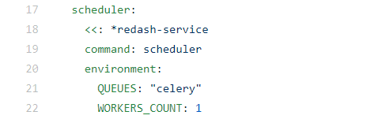

Hi all, I am facing an issue with the installation of redash V9…
I am using the setup script to complete the installation.
while this works well with redash v8, when i set the target docker image(in the docker-compose.yml:3) from redash/redash:8.0.0.b32245
to redash/redash:9.0.0-beta.b49509, the resulting redash instance works well except that the queued jobs are not getting started which means that some functionality is not working properly (mails, alerts, periodic tasks etc))
{kind=link}
{kind=link}
I suspect this is related to the fact celery was replaced by RQ in V9 but i am not sure how to confirm or debug that hypothesis.
I’ve seen this line in the docker-compose.yml which mentions “celery”

and i suspect this should probably be changed to something else. tried “RQ” and tried to remove this env var with no different result…
These are the logs of the scheduler(no more logs are appended no matter what i do):
{kind=link}
These are the logs of the scheduled worker:
ubuntu@ip-172-31-14-56:/opt/redash$ docker logs -f redash_scheduled_worker_1
Starting RQ worker...
2021-07-13 10:53:52,328 INFO RPC interface 'supervisor' initialized
2021-07-13 10:53:52,328 CRIT Server 'unix_http_server' running without any HTTP authentication checking
2021-07-13 10:53:52,328 INFO supervisord started with pid 1
2021-07-13 10:53:53,331 INFO spawned: 'worker_healthcheck' with pid 9
2021-07-13 10:53:53,333 INFO spawned: 'worker-0' with pid 10
2021-07-13 10:53:54,334 INFO success: worker_healthcheck entered RUNNING state, process has stayed up for > than 1 seconds (startsecs)
[2021-07-13 10:54:13,205][PID:10][INFO][rq.worker] Worker rq:worker:41149f94a975468ca15b0c7cf860b136: started, version 1.5.0
[2021-07-13 10:54:13,206][PID:10][INFO][rq.worker] *** Listening on scheduled_queries, schemas...
[2021-07-13 10:54:13,208][PID:10][INFO][rq.worker] Cleaning registries for queue: scheduled_queries
[2021-07-13 10:54:13,212][PID:10][INFO][rq.worker] Cleaning registries for queue: schemas
2021/07/13 10:54:13 [worker_healthcheck] Starting the health check for worker process Checks config: [(<class 'redash.cli.rq.WorkerHealthcheck'>, {})]
2021/07/13 10:54:13 [worker_healthcheck] Installing signal handlers.
READY
2021/07/13 10:54:13 [worker_healthcheck] Received TICK_60 event from supervisor
2021/07/13 10:54:13 [worker_healthcheck] No processes in state RUNNING found for process worker
RESULT 2
OKREADY
2021/07/13 10:55:01 [worker_healthcheck] Received TICK_60 event from supervisor
RESULT 2
OKREADY
2021/07/13 10:55:01 [worker_healthcheck] No processes in state RUNNING found for process worker
2021/07/13 10:56:01 [worker_healthcheck] Received TICK_60 event from supervisor
2021/07/13 10:56:01 [worker_healthcheck] No processes in state RUNNING found for process worker
RESULT 2
OKREADY
2021/07/13 10:57:01 [worker_healthcheck] Received TICK_60 event from supervisor
RESULT 2
OKREADY
2021/07/13 10:57:01 [worker_healthcheck] No processes in state RUNNING found for process worker
2021/07/13 10:58:01 [worker_healthcheck] Received TICK_60 event from supervisor
2021/07/13 10:58:01 [worker_healthcheck] No processes in state RUNNING found for process worker
RESULT 2
OKREADY
2021-07-13 10:58:54,154 INFO success: worker-0 entered RUNNING state, process has stayed up for > than 300 seconds (startsecs)
2021/07/13 10:59:01 [worker_healthcheck] Received TICK_60 event from supervisor
2021/07/13 10:59:01 [worker_healthcheck] Performing `RQ Worker Healthcheck` check for process name worker-0
2021/07/13 10:59:01 [worker_healthcheck] WorkerHealthcheck: Worker rq:worker:41149f94a975468ca15b0c7cf860b136 healthcheck: Is busy? False. Seen lately? False (287 seconds ago). Has nothing to do? True (0 jobs in watched queues). ==> Is healthy? True
2021/07/13 10:59:01 [worker_healthcheck] `RQ Worker Healthcheck` check succeeded for process worker-0
RESULT 2
OKREADY
2021/07/13 11:00:01 [worker_healthcheck] Received TICK_60 event from supervisor
2021/07/13 11:00:01 [worker_healthcheck] Performing `RQ Worker Healthcheck` check for process name worker-0
RESULT 2
OKREADY
2021/07/13 11:00:01 [worker_healthcheck] WorkerHealthcheck: Worker rq:worker:41149f94a975468ca15b0c7cf860b136 healthcheck: Is busy? False. Seen lately? False (348 seconds ago). Has nothing to do? True (0 jobs in watched queues). ==> Is healthy? True
2021/07/13 11:00:01 [worker_healthcheck] `RQ Worker Healthcheck` check succeeded for process worker-0
2021/07/13 11:01:01 [worker_healthcheck] Received TICK_60 event from supervisor
2021/07/13 11:01:01 [worker_healthcheck] Performing `RQ Worker Healthcheck` check for process name worker-0
RESULT 2
2021/07/13 11:01:01 [worker_healthcheck] WorkerHealthcheck: Worker rq:worker:41149f94a975468ca15b0c7cf860b136 healthcheck: Is busy? False. Seen lately? True (3 seconds ago). Has nothing to do? True (0 jobs in watched queues). ==> Is healthy? True
2021/07/13 11:01:01 [worker_healthcheck] `RQ Worker Healthcheck` check succeeded for process worker-0
OKREADY
2021/07/13 11:02:01 [worker_healthcheck] Received TICK_60 event from supervisor
2021/07/13 11:02:01 [worker_healthcheck] Performing `RQ Worker Healthcheck` check for process name worker-0
RESULT 2
OKREADY
2021/07/13 11:02:01 [worker_healthcheck] WorkerHealthcheck: Worker rq:worker:41149f94a975468ca15b0c7cf860b136 healthcheck: Is busy? False. Seen lately? False (63 seconds ago). Has nothing to do? True (0 jobs in watched queues). ==> Is healthy? True
2021/07/13 11:02:01 [worker_healthcheck] `RQ Worker Healthcheck` check succeeded for process worker-0
Any help would be highly appreciated, thank you.